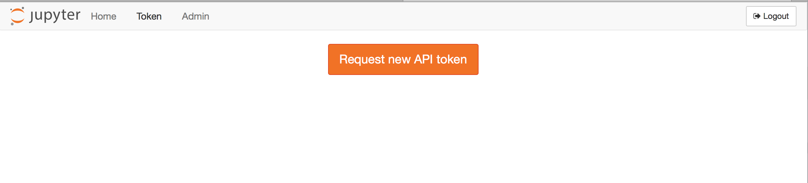
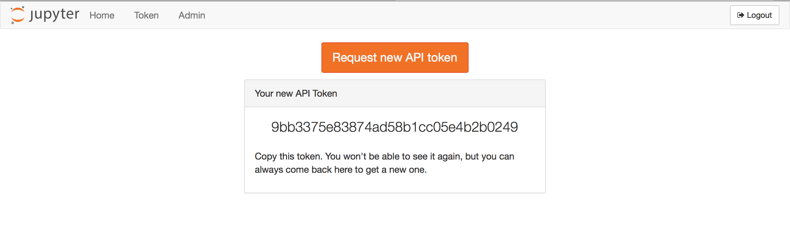

External services#
When working with JupyterHub, a Service is defined as a process that interacts with the Hub’s REST API. A Service may perform a specific action or task. For example, shutting down individuals’ single user notebook servers that have been idle for some time is a good example of a task that could be automated by a Service. Let’s look at how the jupyterhub_idle_culler script can be used as a Service.
Real-world example to cull idle servers#
JupyterHub has a REST API that can be used by external services. This document will:
explain some basic information about API tokens
clarify that API tokens can be used to authenticate to single-user servers as of version 0.8.0
show how the jupyterhub_idle_culler script can be:
used in a Hub-managed service
run as a standalone script
Both examples for jupyterhub_idle_culler will communicate tasks to the
Hub via the REST API.
API Token basics#
Create an API token#
To run such an external service, an API token must be created and provided to the service.
As of version 0.6.0, the preferred way of doing this is to first generate an API token:
openssl rand -hex 32
In version 0.8.0, a TOKEN request page for generating an API token is available from the JupyterHub user interface:


Pass environment variable with token to the Hub#
In the case of cull_idle_servers, it is passed as the environment
variable called JUPYTERHUB_API_TOKEN.
Use API tokens for services and tasks that require external access#
While API tokens are often associated with a specific user, API tokens
can be used by services that require external access for activities
that may not correspond to a specific human, e.g. adding users during
setup for a tutorial or workshop. Add a service and its API token to the
JupyterHub configuration file, jupyterhub_config.py:
c.JupyterHub.services = [
{'name': 'adding-users', 'api_token': 'super-secret-token'},
]
Restart JupyterHub#
Upon restarting JupyterHub, you should see a message like below in the logs:
Adding API token for <username>
Authenticating to single-user servers using API token#
In JupyterHub 0.7, there is no mechanism for token authentication to single-user servers, and only cookies can be used for authentication. 0.8 supports using JupyterHub API tokens to authenticate to single-user servers.
Configure the idle culler to run as a Hub-Managed Service#
Install the idle culler:
pip install jupyterhub-idle-culler
In jupyterhub_config.py, add the following dictionary for the
idle-culler Service to the c.JupyterHub.services list:
c.JupyterHub.services = [
{
'name': 'idle-culler',
'command': [sys.executable, '-m', 'jupyterhub_idle_culler', '--timeout=3600'],
}
]
c.JupyterHub.load_roles = [
{
"name": "list-and-cull", # name the role
"services": [
"idle-culler", # assign the service to this role
],
"scopes": [
# declare what permissions the service should have
"list:users", # list users
"read:users:activity", # read user last-activity
"admin:servers", # start/stop servers
],
}
]
where:
commandindicates that the Service will be launched as a subprocess, managed by the Hub.
Changed in version 2.0: Prior to 2.0, the idle-culler required ‘admin’ permissions. It now needs the scopes:
list:usersto access the user list endpointread:users:activityto read activity infoadmin:serversto start/stop servers
Run cull-idle manually as a standalone script#
Now you can run your script by providing it the API token and it will authenticate through the REST API to interact with it.
This will run the idle culler service manually. It can be run as a standalone
script anywhere with access to the Hub, and will periodically check for idle
servers and shut them down via the Hub’s REST API. In order to shutdown the
servers, the token given to cull-idle must have permission to list users
and admin their servers.
Generate an API token and store it in the JUPYTERHUB_API_TOKEN environment
variable. Run jupyterhub_idle_culler manually.
export JUPYTERHUB_API_TOKEN='token'
python -m jupyterhub_idle_culler [--timeout=900] [--url=http://127.0.0.1:8081/hub/api]